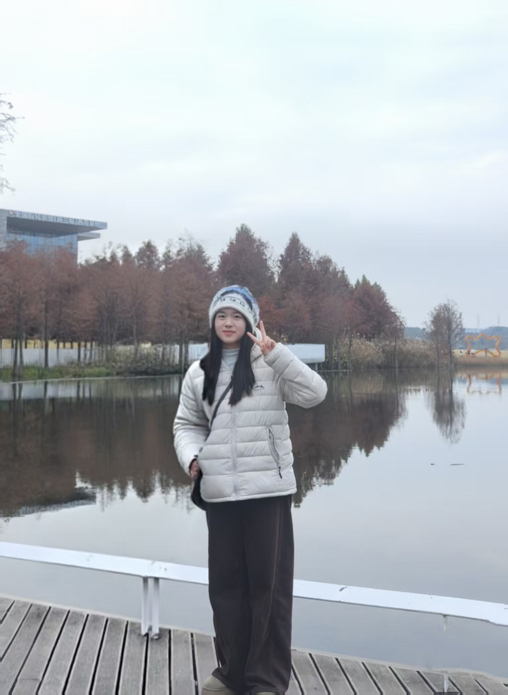

成都大学 商学院 · 工商管理 24-1 班 商学院学生会 双创中心 & 学研部 · 在任主席
一个喜欢把想法「上线」的人。白天在学生会里统筹双创与学研的大小事务， 晚上跟 AI 一起写页面、做笔记、搭网站。 这个站点收录了我的 AI 学习笔记、科研成果，和课余生活里的小小热爱。
从「网站只能活三小时」到永久上线——我用 AI 做个人网站的完整踩坑与心得复盘。
论文与软件著作权两个模块——记录我在学术路上的每一次认真尝试。
尤克里里、羽毛球、钢琴，还有逛街和追剧——工作之外的另外一半的我。